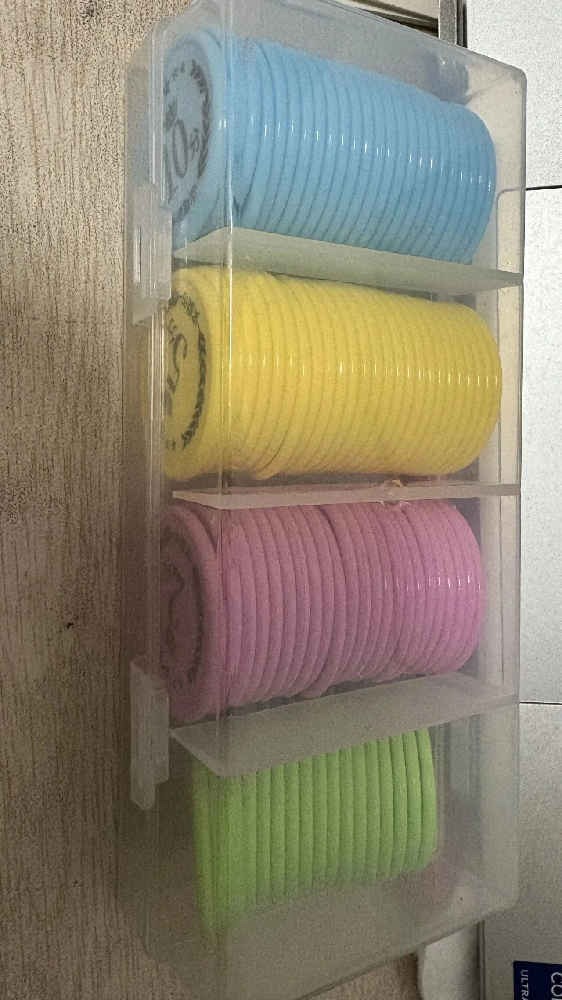

没有一劳永逸的招，只有见招拆招的妈。
——圆圈妈妈
上回写了那篇《流水线操作养双胞胎》，后台炸了。
有姐妹说“救了老命了”，也有姐妹说“不管用”，积分表刚贴上3天好使，第4天就废了，还有人说，看见密密麻麻的计划表，自己先躺平了。
我得说实话：不管用，太正常了。
你在研究他们，他们也在研究你，今天这招管用，过两天，人家就破解了。养双胞胎，说白了，就是天天斗智斗勇。
今天再抖几招压箱底的绝技。
第一招：必要时做点手脚
什么意思呢？我说件事。
圈圈喜欢写东西，但不是写作业，就是自己瞎写，一两句话，几句打油诗，随手记在本子上，如下图所示↓
我把他的那些小诗投了一个征文比赛，不管有没有得奖，等过几天就告诉他得奖了，还偷偷在PDD定制了一张奖状，又有模有样地颁发给他，他激动到蹦起来，满屋子乱窜。
从那以后，他一有空就趴着写，写诗，写日记，写小作文。有时候半天憋几行，有时候一写就是上千字，一边写一边凡尔赛：“哎呀妈妈，我感觉我停不下来了都。”
写得怎么样？
实话实说，不怎么样。
今天吃了什么，昨天玩了什么，圆圆又把他惹哭了，连阳台上那只蜗牛都能写半页。
但我满意得很，就冲他那股劲头，就算是流水账，我也当大作看。
他心里一直记着那张奖状，那种被认可的感觉，比我说一万句“你真棒”都好使。
所以，积分表这事，可以睁一只眼闭一只眼，必要时偷偷搞点小动作让他够得着，让他先把这件事坚持下去，比为了扣那一分，把他的积极性磨没了更重要。
第二招：不必较真，别跟表格死磕
我上回发的那些表格，只是个参考。
你要是不管三七二十一，把表往墙上一贴，指着说“照这个做”，那完了，孩子一定跟你对着干。
你得拉他一起做，让他自己写心愿，再一起商量怎么攒积分去换。
这表得是你们娘仨合伙搞的，娃儿们才认。
像幼儿园的娃，最简单了，只需列三件事：自己吃饭、收玩具、不打架，做到了就画颗星，攒满一排换个小奖励。
别贪多，多了他记不住，你也盯不住。最关键的一点，每周得调一次，像我现在基本一星期改一次，有时候刚做好，两天又改了。
你发现他哪项总完不成，别骂，先看是不是目标定高了，高了就降，发现他抵触了、疲了，就松一松。
要是死磕表，磕到最后，不是他们烦，就是你烦，十有八九，娘仨一起烦。表只是工具，不是标金准。
第三招：见人下菜，见招拆招
我发现，积分那套，对圈圈奏效，对圆圆，不管用。
如果说圈圈是属于月底发工资型，那圆圆就属于日结。
圆圆是个啥孩子？中度A娃，只喜欢即时的奖励。做任何事都有一个条件：这事对我有没有好处？有，立马干；没有，你喊破喉咙也没用。
一开始我也给他记分，后来发现，晚上才登记，太慢了，他那股热乎劲儿早凉了，完全无感。
于是我换了一种奖励方式：星币，如下图所示↓
他做好一件事，立马给一个，到手那一刻，他得眼睛都是亮的，诶，就是那种当场兑现的满足感。然后他就会追着问，下一项是什么，还能不能再挣一个？
好像海洋馆里训练海豚，每做完一个动作，驯养员就马上扔条鱼，有鱼吃才表演，没鱼吃就沉底。
圆圆就是那头海豚。
所以，还得根据娃的调性，设置特别的奖励方式。有的孩子认积分，有的孩子认星币，有的孩子认你一句当众表扬。你得摸准他吃哪一套，用对方式才行得通。
最后交代一句：每天固定个时间，坐下来，认认真真把今天的积分登记了，还要有仪式感告诉他们今天挣了多少分，哪件事做得特别漂亮。
说实话，刚开始整这事比上班还累，费妈。但你不费这个妈，回头就得费更大的劲去灭火。
所以现在，我已经不敢说哪一招最好使了，去年管用的，今年未必，上个月还乖乖听话，这个月又开始研究怎么钻空子。
当妈嘛，也没别的本事，
他们出一招，我拆一招，
拆不过，就再想一招。
反正，别想赢！
别输太惨就行。
-END-
双胞胎儿子放寒假第10天，我的精神状态
双胞胎长得太像，到底能有多尬？
双胞胎上小学要不要分班？终于有答案了...
